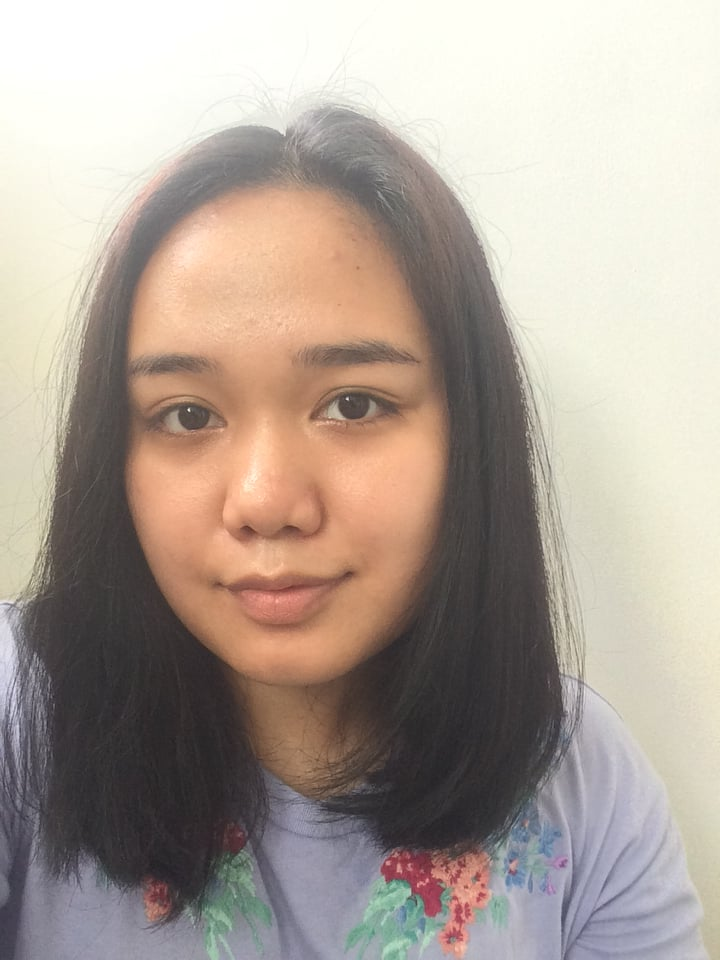
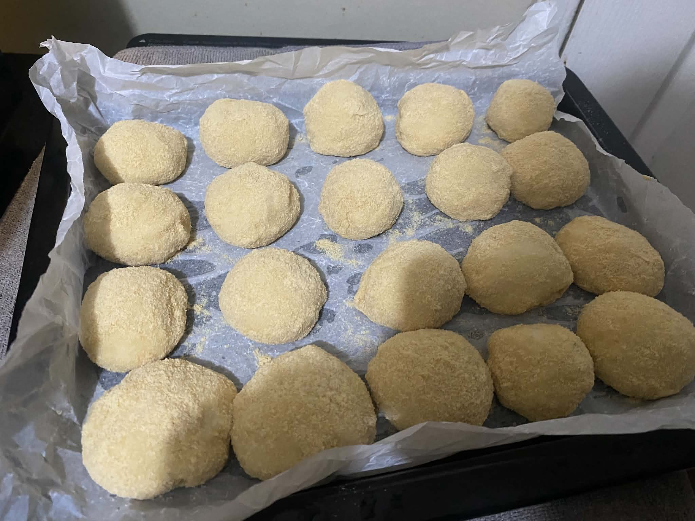
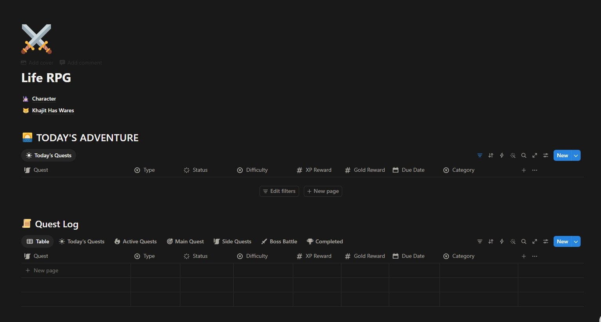
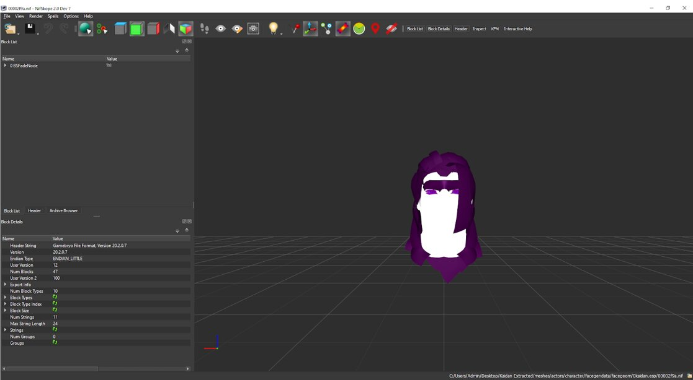

Video Games & the Worlds Within
I can forgive clunky gameplay if the story is compelling enough. Give me an interesting world and a narrative worth getting lost in, and I'll probably forget what time it is.
A student of media, a lover of stories.
"Not all those who wander are lost. Some are just looking for the next side quest."
Read my taleEST. IN TAMRIEL
IN SPIRIT, AT LEAST
The Adventurer

Warm sands, traveler. My name is Andrea. I'm a Multimedia Studies student balancing university life with independent work. I'm interested in the ways stories and technology come together. I'm always looking for opportunities to learn something new and explore ideas through different forms of media.
Outside the classroom, I spend time my time going on adventures in my favorite worlds, or simply working on my projects.
Treasures gathered along the way
A collection of interests that keep my curiosity alive and occasionally send me down a rabbit hole.
I can forgive clunky gameplay if the story is compelling enough. Give me an interesting world and a narrative worth getting lost in, and I'll probably forget what time it is.
I'm naturally curious about niche subjects and obscure bits of knowledge. I enjoy picking up new skills, especially when they lead me down an unexpected path.
I enjoy creating quests and characters that feel like they belong in their worlds. I pay particular attention to the setting, lore, and little details that make a fictional world feel lived-in.
I have a soft spot for organizing information and building systems to keep track of my interests. If something can be turned into a tracker or a Notion database, chances are I've considered it.
Quests in progress
Some projects from the workbench. A few are ongoing quests; others are ideas still taking shape.

THE HEARTHFIRE CHRONICLES
Experimenting in the kitchen, from homemade bread to pandesal. A cozy little quest in patience and the occasional flour-covered disaster.

THE EVERYDAY ADVENTURER
A gamified life planner built around quests and gaining real-world XP - turning everyday goals and responsibilities into an adventure.

IN THE WORKSHOP
Expanding the world of Skyrim through writing quests, designing interesting places, and implementation on the Creation Kit engine. I also create followers to accompany the player on their journey.
A message for the road
Have a project in mind, or just want to talk games and storytelling? Send a message and let's start a conversation.
Send a missive